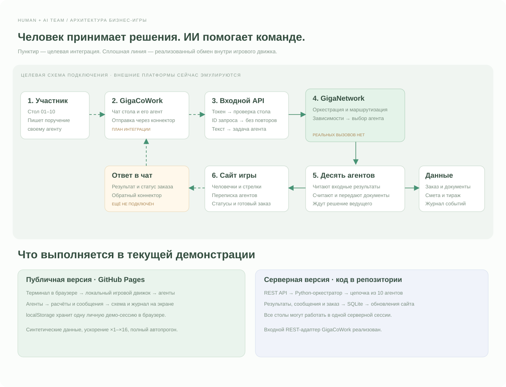

Стол пишет поручение своему агенту в чате. В демо используется терминал ниже.
Человек + ИИ.
Сильнее вместе.
Вы ставите задачу и принимаете решения. ИИ помогает считать, проверять и выполнять работу быстрее.
Команда и её ИИ-помощники LIVE
Агенты доставляют информацию коллегам. Человек задаёт направление и проверяет важные решения.
ОжидаетРаботаетГотово
1. Участник пишет поручение→2. ИИ помогает команде→3. Человек проверяет и решает
Синтетическая эмуляцияПоказываем, как ИИ освобождает время человека для решений
Скорость
ЧЧеловекставит задачу → проверяет рекомендации → согласует закупку
Агенты разговаривают
Кто отправил → кому → какие данные передал. Это синтетические сообщения.
Пульс компании
ПОСЛЕДНИЕ СОБЫТИЯКарточка заказа
ЧЕРНОВИККак работает команда за столамиПокажем ввод поручений, помощь ИИ и проверку результатов.
Рабочее место участникаУчебный интерфейс по образцу GigaCoWork · синтетические данные
Общение агентов между собой
Сообщения появляются при реальной смене этапов эмулятора, а не проигрываются отдельной анимацией.
Как работает бизнес-игра
Путь запроса участника, работа бэкенда и возврат результата.
Что работает сейчас: эта публичная версия исполняет синтетическую цепочку в браузере. GigaCoWork и GigaNetwork на схеме — план интеграции. Реального вызова этих платформ нет. Python API и SQLite реализованы в серверной версии в репозитории.

Передаёт ID стола, текст и уникальный ID запроса. Сервер проверяет доступ и исключает повторы.
На схеме это целевой оркестратор. Сейчас его роль выполняет собственный движок: зависимости, расчёты, передача результатов.
Сайт показывает состояние и диалог. Возврат в настоящий чат GigaCoWork ещё требует подключения и проверки.
Десять столов. Десять ролей.
У каждого стола своё рабочее пространство и свой ИИ-помощник. Выберите стол, чтобы открыть GigaCoWork.
Журнал событий
Все сообщения, передачи результатов и решения ведущего